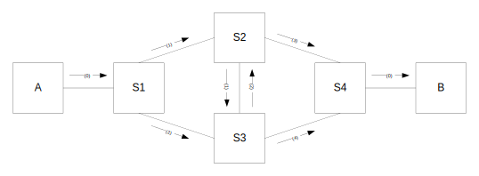

FRER functional description
Frame Replication and Elimination for Reliability (FRER) is defined in IEEE 802.1CB-2017.
FRER reduces the probability of packet loss by replicating packets at the source, transmit these replicas over multiple paths, and finally removing the duplicate packets at the destination.
A FRER enabled switch consists of the following building blocks:
-
Stream Identification - Identifies the stream based on and fields from the frame.
-
Sequence Generation - Generates a sequence number for each packet in a Member Stream..
-
Stream Split - Split a stream into multiple new Member Streams on different egress ports.
-
Individual Recovery - Discards duplicate frames of a Member Stream.
-
Sequence Recovery - Discards duplicate frames of a merged set of Member Streams.
Streams are transmitted in a separate VLAN, where forwarding is set up manually and flooding and learning is disabled.
Spanning Tree is used to avoid frames looping in other VLANs.
1. FRER Overview
The illustration below shows a stream from host A to host B via switches S1-S4. The stream is assigned to VLAN 10:
-
Host A is FRER-unaware and sends an untagged stream (0) with DMAC = MAC address of host B.
-
Switch S1 does the following FRER functions:
-
Stream Identification: The received frame from host A is identified as belonging to Member Stream 0 and is classified to VLAN 10.
-
Sequence Generation: The sequence number for the frame is assigned.
-
Splitting: The frame is forwarded to two Member Streams (1) and (2) using a C-tag with VID 10 and an R-tag with the sequence number.
-
-
Switch S2 does the following FRER functions:
-
Stream Identification:
-
The received frame from S1 is identified as part of Member Stream 1.
-
The received frame from S3 is identified as part of Member Stream 2.
-
-
Merge: Member Stream 1 and Member Stream 2 map to the same Compound Stream.
-
Sequence Recovery: One of the received frames in the Compound Stream is discarded. The resulting Member Stream 3 is forwarded towards S4.
-
-
Switch S3 operates in a similar way as S2.
-
Switch S4 does the following FRER functions:
-
Stream Identification:
-
The received frame from S2 is identified as part of Member Stream 3.
-
The received frame from S3 is identified as part of Member Stream 4.
-
-
Merge: Member Stream 3 and Member Stream 4 map to the same Compound Stream.
-
Sequence Recovery: One of the received frames in the Compound Stream is discarded. The resulting stream is forwarded towards host B without C-tag and R-tag.
-

2. Stream Identification
Stream Identification configuration uses the vcap tool which is described on the VCAP Tool page.
The stream identification can match on every field that is supported by IS1 but in the following examples, we will identify a stream by DMAC and VLAN. This is what is called a Null Stream identification in 802.1CB.
We will also need to match on the ingress port because we need to hit a specific ingress flow for each ingress port.
All ports generate 'S1_7TUPLE' IS1 keys by default. These keys are of type X4 and occupy 4 subwords in the VCAP. See page Classification (IS0/IS1) for more information.
As we only need to match on DMAC, VLAN, and port we can use a shorter key called 'S1_DMAC_VID' which is of type X1 and only occupies 1 subword. This saves space in the VCAP that can be used for other purposes.
The tc chain template command can be used to change the generated key on a port for a given lookup.
To change the generated IS1 key to 'S1_DMAC_VID' in the second lookup for all frames received on eth0 ('chain 11000' denotes the second lookup in IS1):
# tc qdisc add dev eth0 clsact # tc chain add dev eth0 ingress chain 11000 protocol 802.1q flower skip_sw \ dst_mac 00:00:00:00:00:00 \ vlan_id 0 \ vlan_prio 0 \ vlan_ethtype all
See the Chain section on the TC Introduction page for more information about tc chain templates.
The stream identification configuration depends on where the FRER functionality is located in the network.
An example is switch S1 in the illustration above, where the stream transmitter, host A, has no FRER and VLAN functionality.
Switch S1 must identify the stream by the ingress port eth0 and DMAC 00:00:00:dd:dd:dd and classify the stream to VLAN 10 and to ISDX 1. We will want to match only on frames that do NOT contain R-tag and C-tag. To configure the above:
# vcap add is1 10 0 \ s1_dmac_vid lookup 0x01 0xff igr_port_mask 0x001 0x1ff \ r_tagged 0 vlan_tagged 0 l2_dmac 00:00:00:dd:dd:dd ff:ff:ff:ff:ff:ff \ s1 vid_replace_ena 1 vid_add_val 10 isdx_replace_ena 1 isdx_add_val 1
ISDX is a number between 1 and 255 that identifies the stream for later use. The maximum number if stream identifications in a switch is therefore 255.
Another example is switch S2, where we will expect that the stream contains both R-tag and C-tag.
Switch S2 must identify the stream by the ingress port eth0, DMAC 00:00:00:dd:dd:dd and VLAN 10 and classify the stream to ISDX 1. We will want to match only on frames that contain R-tag and C-tag. To configure the above:
# vcap add is1 10 0 \ s1_dmac_vid lookup 0x01 0xff igr_port_mask 0x001 0x1ff \ r_tagged 1 vlan_tagged 1 vid 10 0xfff l2_dmac 00:00:00:dd:dd:dd ff:ff:ff:ff:ff:ff \ s1 isdx_replace_ena 1 isdx_add_val 1
To delete the stream identification above:
# vcap del is1 10 4
3. FRER tool
FRER is not yet supported via standard Linux user commands and therefore a proprietary tool called frer is provided:
$ frer --help Usage: frer cs|msa|msf|ms|iflow|vlan [options] options: --help Show this help text commands: cs: cs cs_id [options] --enable: Enable recovery --alg: frerSeqRcvyAlgorithm (0: Vector, 1: Match) --hlen: frerSeqRcvyHistoryLength --reset_time: frerSeqRcvyResetMSec --take_no_seq: frerSeqRcvyTakeNoSequence --cnt: Show counters --clr: Clear counters --help: Show this help text msa: msa dev1 [dev2] [options] --help: Show this help text msf: msf ms_id [options] --help: Show this help text ms: ms dev ms_id [options] --enable: Enable recovery --alg: frerSeqRcvyAlgorithm (0: Vector, 1: Match) --hlen: frerSeqRcvyHistoryLength --reset_time: frerSeqRcvyResetMSec --take_no_seq: frerSeqRcvyTakeNoSequence --cs_id: Compound stream ID --cnt: Show counters --clr: Clear counters --help: Show this help text iflow: iflow id [options] --ms_enable: Enable member stream --ms_id: Allocated member stream ID --generation: Enable sequence generation --pop: Enable popping of R-tag --dev1: Split device 1 or '-' --dev2: Split device 2 or '-' --help: Show this help text vlan: vlan vid [options] --flood_disable: Disable flooding in VLAN --learn_disable: Disable learning in VLAN --help: Show this help text
All frerSeqRcvXXXX parameters are defined and explained in IEEE 802.1CB-2017.
3.1. Compound Stream
The frer cs command is used to configure a compound stream which is needed when you want to merge several member streams into one compound stream.
This is needed in switch S2, S3, and S4.
A compound stream is identified by a cs_id which is a number between 0 and 255.
See the FRER examples below on how to configure each switch.
To show compound stream 3 configuration:
# frer cs 3 enable: 1 alg: 0 hlen: 4 reset_time: 1000 take_no_seq: 0
Sequence recovery is enabled using Vector algorithm (alg = 0) with history length 4, ResetMSec is 1000 mS and TakeNoSequence is disabled.
To show compound stream 3 counters:
# frer cs 3 --cnt OutOfOrderPackets : 0 RoguePackets : 0 PassedPackets : 0 DiscardedPackets : 0 LostPackets : 0 TaglessPackets : 0 Resets : 0
To clear compound stream 3 counters:
# frer cs 3 --clr
3.2. Member Stream
You will need a member stream if you want to enable individual recovery on a single stream and/or associate the stream with a compound stream in order to merge this stream with other streams.
A member stream is needed for each combination of ingress port/egress port. The ingress port is indirectly given via the ISDX.
This is needed in switch S2, S3, and S4.
See the FRER examples below on how to configure each switch.
A member stream is identified by a number returned by the 'frer msa' command (Member Stream Allocate). To allocate a member stream id for eth1:
$ frer msa eth1 0
This command returns the allocated member stream id associated with eth1.
In case you will want to split a single stream into two egress ports, you must allocate the two ports together as they will need to be associated with the same ISDX:
$ frer msa eth1 eth2 0
This command returns the allocated common member stream id associated with eth1 and eth2.
To show member stream 0 configuration associated with eth1:
$ frer ms eth1 0 enable: 1 alg: 1 hlen: 2 reset_time: 1000 take_no_seq: 0 cs_id: 3
Individual recovery is enabled using Match algorithm (history length is N/A here), ResetMSec is 1000 mS and TakeNoSequence is disabled. This member stream is associated with compound stream 3.
To show member stream 0 counters associated with eth1:
$ frer ms eth1 0 --cnt OutOfOrderPackets : 0 RoguePackets : 0 PassedPackets : 0 DiscardedPackets : 0 LostPackets : 0 TaglessPackets : 0 Resets : 0
To clear member stream 0 counters associated with eth1:
$ frer ms eth1 0 --clr
To free member stream 0:
$ frer msf 0 --clr
3.3. Ingress Flow
An ingress flow associates an ISDX with member stream(s), controls generation/removal of R-tag, and splitting of streams.
There are some restrictions on an ingress flow:
If sequence generation is enabled then member stream association and popping of R-tag is not allowed.
See the FRER examples below on how to configure each switch.
To show ingress flow for ISDX 1:
$ frer iflow 1 ms_enable: 1 ms_id: 0 generation: 0 pop: 0 dev1: eth1 dev2: eth2
ISDX 1 is associated with member stream id 0 and the stream is split into eth1 and eth2. Neither sequence generation nor popping of R-tag is enabled.
3.4. VLAN Configuration
The VLAN configuration allows you to control flooding and learning per VLAN, which is not possible with the current standard Linux bridge vlan API.
To show VLAN configuration for VLAN 10:
$ frer vlan 10 flood_disable: 1 learn_disable: 1
Both flooding and learning are disabled in VLAN 10.
4. FRER Examples
This section described how to configure switch S1, S2, and S4 in the illustration shown above. Switch S3 operates in a similar way as switch S2.
All examples require some common setup.
Create a VLAN-aware bridge with port eth0, eth1, and eth2:
# ip link add name br0 type bridge # ip link set br0 type bridge vlan_filtering 1 # ip link set eth0 master br0 # ip link set eth1 master br0 # ip link set eth2 master br0 # ip link set eth0 up # ip link set eth1 up # ip link set eth2 up # ip link set br0 up
Add VLAN 10 to all ports and disable flooding and learning:
# bridge vlan add dev eth0 vid 10 # bridge vlan add dev eth1 vid 10 # bridge vlan add dev eth2 vid 10 # frer vlan 10 --flood_disable 1 --learn_disable 1
Create a clsact qdisc and a chain template in order to use short 'S1_DMAC_VID' keys in the second lookup in IS1:
# tc qdisc add dev eth0 clsact # tc chain add dev eth0 ingress chain 11000 protocol 802.1q flower skip_sw \ dst_mac 00:00:00:00:00:00 \ vlan_id 0 \ vlan_prio 0 \ vlan_ethtype all # tc qdisc add dev eth1 clsact # tc chain add dev eth1 ingress chain 11000 protocol 802.1q flower skip_sw \ dst_mac 00:00:00:00:00:00 \ vlan_id 0 \ vlan_prio 0 \ vlan_ethtype all # tc qdisc add dev eth2 clsact # tc chain add dev eth2 ingress chain 11000 protocol 802.1q flower skip_sw \ dst_mac 00:00:00:00:00:00 \ vlan_id 0 \ vlan_prio 0 \ vlan_ethtype all
This is only necessary on ports where we use stream identification.
Now the different switches can be configured.
4.1. Switch S1
Switch S1 must:
-
Identify the untagged stream as stream 0 and associate it with ISDX 1 and VLAN 10
-
Generate a sequence number to insert in an R-tag
-
Split the traffic into two egress ports
-
Add C-tag and R-tag on egress
Note that individual and sequence recovery is not used in this setup.
eth0 is connected to host A.
eth1 is connected to switch S2.
eth2 is connected to switch S3.
Create a VCAP rule with priority 10 and handle 0 for stream identification and VLAN classification:
# vcap add is1 10 0 \ s1_dmac_vid lookup 0x01 0xff igr_port_mask 0x001 0x1ff \ r_tagged 0 vlan_tagged 0 l2_dmac 00:00:00:dd:dd:dd ff:ff:ff:ff:ff:ff \ s1 vid_replace_ena 1 vid_add_val 10 isdx_replace_ena 1 isdx_add_val 1
Parameters:
-
s1_dmac_vid - IS1 key
-
lookup 0x01 0xff - Second lookup
-
igr_port_mask 0x001 0x1ff - Match on eth0 (port 0)
-
r_tagged 0 - Frame must be without an R-tag
-
vlan_tagged 0 - Frame must be without a C-tag
-
l2_dmac 00:00:00:dd:dd:dd ff:ff:ff:ff:ff:ff - Match on all bits in host B MAC address
-
-
s1 - IS1 action
-
vid_replace_ena 1 - Enable replace VID classification
-
vid_add_val 10 - VID to classify to
-
isdx_replace_ena 1 - Enable replace ISDX classification
-
isdx_add_val 1 - ISDX to classify to
-
Setup the stream identified by ISDX 1 to generate R-tag (Sequence Generation) and transmit on eth1 and eth2 (Stream Split):
# frer iflow 1 --generation 1 --dev1 eth1 --dev2 eth2
4.2. Switch S2
Switch S2 must:
-
Identify the C-tagged and R-tagged stream from switch S1 as part of member stream 1 and associate it with ISDX 1
-
Identify the C-tagged and R-tagged stream from switch S3 as part of member stream 2 and associate it with ISDX 2
-
Apply individual recovery to both member streams 1 and 2
-
Split member stream 1 into two egress ports
-
Merge member streams 1 and 2 by mapping them to the same compound stream
-
Apply sequence recovery to the compound stream consisting of member streams 1 and 2 and discard one of the frames
eth0 is connected to switch S1.
eth1 is connected to switch S3.
eth2 is connected to switch S4.
Create a VCAP rule with priority 10 and handle 0 for stream identification of stream (1):
# vcap add is1 10 0 \ s1_dmac_vid lookup 0x01 0xff igr_port_mask 0x001 0x1ff \ r_tagged 1 vlan_tagged 1 vid 10 0xfff l2_dmac 00:00:00:dd:dd:dd ff:ff:ff:ff:ff:ff \ s1 isdx_replace_ena 1 isdx_add_val 1
Parameters:
-
s1_dmac_vid - IS1 key
-
lookup 0x01 0xff - Second lookup
-
igr_port_mask 0x001 0x1ff - Match on eth0 (port 0)
-
r_tagged 1 - Frame must contain an R-tag
-
vlan_tagged 0 - Frame must contain a C-tag
-
vid 10 0xfff - VID must be 10
-
l2_dmac 00:00:00:dd:dd:dd ff:ff:ff:ff:ff:ff - Match on all bits in host B MAC address
-
-
s1 - IS1 action
-
isdx_replace_ena 1 - Enable replace ISDX classification
-
isdx_add_val 1 - ISDX to classify to
-
Create a VCAP rule with priority 10 and handle 1 for stream identification of stream (2):
# vcap add is1 10 1 \ s1_dmac_vid lookup 0x01 0xff igr_port_mask 0x002 0x1ff \ r_tagged 1 vlan_tagged 1 vid 10 0xfff l2_dmac 00:00:00:dd:dd:dd ff:ff:ff:ff:ff:ff \ s1 isdx_replace_ena 1 isdx_add_val 2
Parameters:
-
s1_dmac_vid - IS1 key
-
lookup 0x01 0xff - Second lookup
-
igr_port_mask 0x002 0x1ff - Match on eth1 (port 1)
-
r_tagged 1 - Frame must contain an R-tag
-
vlan_tagged 0 - Frame must contain a C-tag
-
vid 10 0xfff - VID must be 10
-
l2_dmac 00:00:00:dd:dd:dd ff:ff:ff:ff:ff:ff - Match on all bits in host B MAC address
-
-
s1 - IS1 action
-
isdx_replace_ena 1 - Enable replace ISDX classification
-
isdx_add_val 2 - ISDX to classify to
-
Configure compound stream 3 with vector algorithm, history length 10, and reset_time 500 milliseconds
# frer cs 3 --enable 1 --alg 0 --hlen 10 --reset_time 500
Allocate member stream id for egress on eth1 and eth2:
# frer msa eth1 eth2 0
The number returned will later be used as ms_id for member stream 1
Allocate member stream id for egress on eth2 only:
# frer msa eth2 2
The number returned will later be used as ms_id for member stream 2
Setup member stream 1 on eth1 (ms_id 0) with match algorithm, reset_time 500 milliseconds:
# frer ms eth1 0 --enable 1 --alg 1 --reset_time 500
Setup member stream 1 on eth2 (ms_id 0) with match algorithm, reset_time 500 milliseconds, and compound stream 3:
# frer ms eth2 0 --enable 1 --alg 1 --reset_time 500 --cs_id 3
Setup member stream 2 on eth2 (ms_id 2) with match algorithm, reset_time 500 milliseconds, and compound stream 3:
# frer ms eth2 2 --enable 1 --alg 1 --reset_time 500 --cs_id 3
Associate ISDX 1 with member stream 1 (ms_id 0) and split the stream into eth1 and eth2:
# frer iflow 1 --ms_enable 1 --ms_id 0 --dev1 eth1 --dev2 eth2
Associate ISDX 2 with member stream 2 (ms_id 2) and eth2 only:
# frer iflow 2 --ms_enable 1 --ms_id 2 --dev1 eth2
4.3. Switch S4
Switch S4 must:
-
Identify the C-tagged and R-tagged stream from switch S2 as part of member stream 3 and associate it with ISDX 3
-
Identify the C-tagged and R-tagged stream from switch S3 as part of member stream 4 and associate it with ISDX 4
-
Apply individual recovery to both member stream 3 and 4
-
Merge member stream 3 and 4 by mapping them to the same compound stream
-
Apply sequence recovery to the compound stream consisting of member stream 3 and 4 and discard one of the frames
-
Remove C-tag and R-tag
eth0 is connected to switch S2.
eth1 is connected to switch S3.
eth2 is connected to host B.
Create a VCAP rule with priority 10 and handle 0 for stream identification of stream (3):
# vcap add is1 10 0 \ s1_dmac_vid lookup 0x01 0xff igr_port_mask 0x001 0x1ff \ r_tagged 1 vlan_tagged 1 vid 10 0xfff l2_dmac 00:00:00:dd:dd:dd ff:ff:ff:ff:ff:ff \ s1 isdx_replace_ena 1 isdx_add_val 3
Parameters:
-
s1_dmac_vid - IS1 key
-
lookup 0x01 0xff - Second lookup
-
igr_port_mask 0x001 0x1ff - Match on eth0 (port 0)
-
r_tagged 1 - Frame must contain an R-tag
-
vlan_tagged 0 - Frame must contain a C-tag
-
vid 10 0xfff - VID must be 10
-
l2_dmac 00:00:00:dd:dd:dd ff:ff:ff:ff:ff:ff - Match on all bits in host B MAC address
-
-
s1 - IS1 action
-
isdx_replace_ena 1 - Enable replace ISDX classification
-
isdx_add_val 3 - ISDX to classify to
-
Create a VCAP rule with priority 10 and handle 1 for stream identification of stream (4):
# vcap add is1 10 1 \ s1_dmac_vid lookup 0x01 0xff igr_port_mask 0x002 0x1ff \ r_tagged 1 vlan_tagged 1 vid 10 0xfff l2_dmac 00:00:00:dd:dd:dd ff:ff:ff:ff:ff:ff \ s1 isdx_replace_ena 1 isdx_add_val 4
Parameters:
-
s1_dmac_vid - IS1 key
-
lookup 0x01 0xff - Second lookup
-
igr_port_mask 0x002 0x1ff - Match on eth1 (port 1)
-
r_tagged 1 - Frame must contain an R-tag
-
vlan_tagged 0 - Frame must contain a C-tag
-
vid 10 0xfff - VID must be 10
-
l2_dmac 00:00:00:dd:dd:dd ff:ff:ff:ff:ff:ff - Match on all bits in host B MAC address
-
-
s1 - IS1 action
-
isdx_replace_ena 1 - Enable replace ISDX classification
-
isdx_add_val 4 - ISDX to classify to
-
Add static MAC address in VLAN 10 on eth2. This is needed if no splitting is involved:
# bridge fdb add 00:00:00:dd:dd:dd dev eth2 static master vlan 10
Configure compound stream 0 with vector algorithm, history length 10, and reset_time 500 milliseconds
# frer cs 0 --enable 1 --alg 0 --hlen 10 --reset_time 500
Allocate member stream id for egress on eth2:
# frer msa eth2 0
The number returned will later be used as ms_id for member stream 3
Allocate member stream id for egress on eth2:
# frer msa eth2 2
The number returned will later be used as ms_id for member stream 4
Setup member stream 3 on eth2 (ms_id 0) with match algorithm, reset_time 500 milliseconds, and compound stream 0:
# frer ms eth2 0 --enable 1 --alg 1 --reset_time 500 --cs_id 0
Setup member stream 4 on eth2 (ms_id 2) with match algorithm, reset_time 500 milliseconds, and compound stream 0:
# frer ms eth2 2 --enable 1 --alg 1 --reset_time 500 --cs_id 0
Associate ISDX 3 with member stream 3 (ms_id 0), pop R-tag and set egress to eth2:
# frer iflow 3 --ms_enable 1 --ms_id 0 --pop 1 --dev1 eth2
Associate ISDX 4 with member stream 4 (ms_id 2), pop R-tag and set egress to eth2:
# frer iflow 4 --ms_enable 1 --ms_id 2 --pop 1 --dev1 eth2
Create a VCAP rule with priority 10 and handle 0 to remove the VLAN tag:
# vcap add es0 10 0 \ vid egr_port 2 0xf vid 10 0xfff \ s0_vid push_outer_tag 3
Parameters:
-
vid - ES0 key
-
egr_port 2 0xf - Match on egress on eth2 (port 2)
-
vid 10 0xfff - VID must be 10
-
-
s0_vid - ES0 action
-
push_outer_tag 3 - Force untag
-